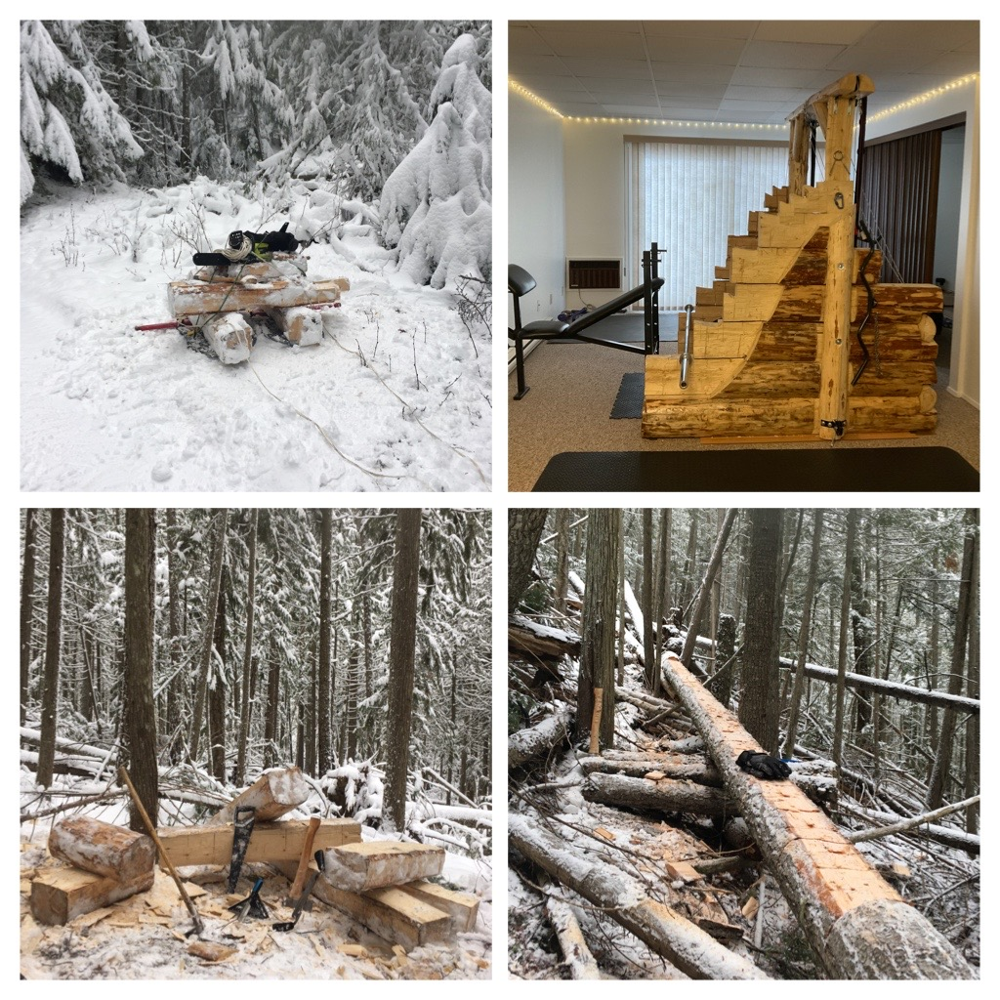
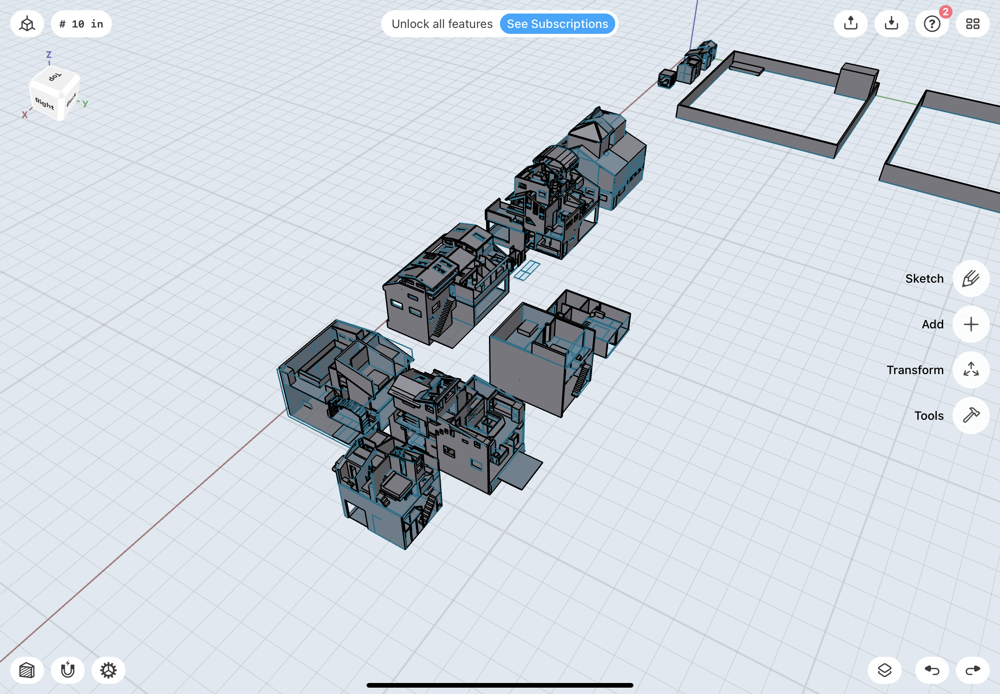
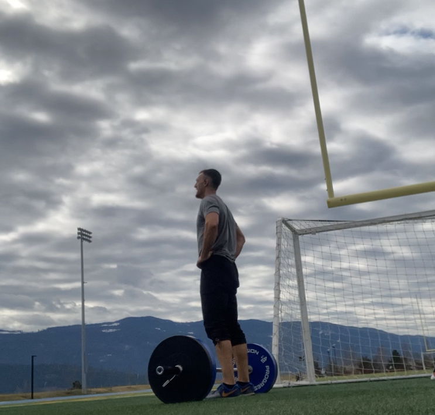

Hobbies
Here is a small selection of my hobbies and hobby projects!

WoodWorking
Woodworking has long been a personal passion of mine. I enjoy drafting projects in CAD prior to building and appreciate working with hand tools and reclaimed wood as a sustainable design approach.

Architecture Design
Shapr3D CAD app
Architecture and landscape design have always fascinated me. In my free time, I enjoy sketching floor plans and experimenting with design layouts.

Weight Lifting
Having grown up involved in sports, weight lifting has remained an important part of my lifestyle and daily routine.

Biking
I enjoy both riding and maintaining bikes and have always been enamoured by the mechanical and technical aspects of them.